Modern control for dynamic legged robots
Jan 30, 2024
Agenda
- Importance of robot legged locomotion problem
- Two views of the solution
- Dynamic models
- Optimal control problem
- Quadruped robot legged locomotion
- Biped trajectory optimization
- Insights in reinforcement learning
Legged robots are cool…
- High mobility. Able to traverse different types of terrains, step over obstacles
- Fascinating fusion of biological inspiration and engineered design. Ideal platform to implement “athletic intelligence”

…But Challenging
- Robust mechanical design
- Advanced sensing and state estimation
- Efficient energy management
- Sophisticated control
- Complex, multi-DOF underactuated system
- Hybrid in nature
- Uncertain models, conditions

New generation of humanoid robots
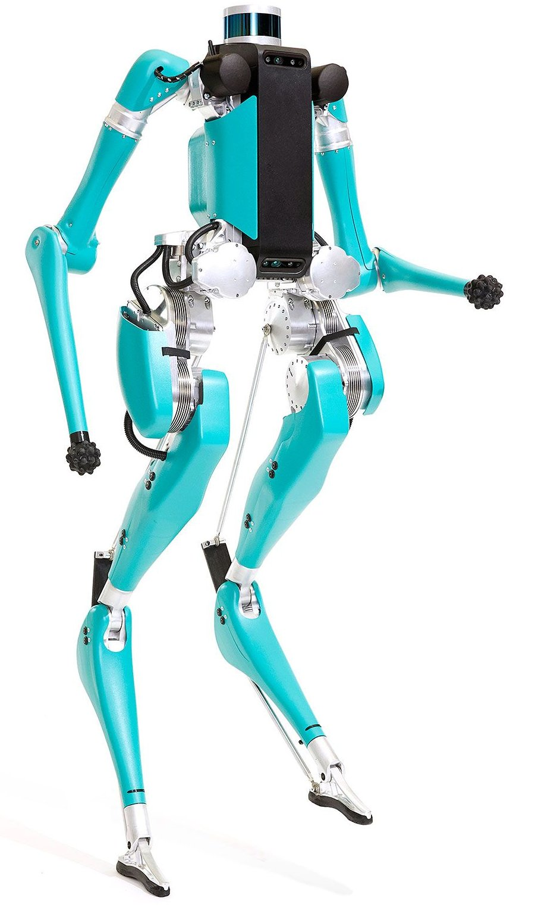
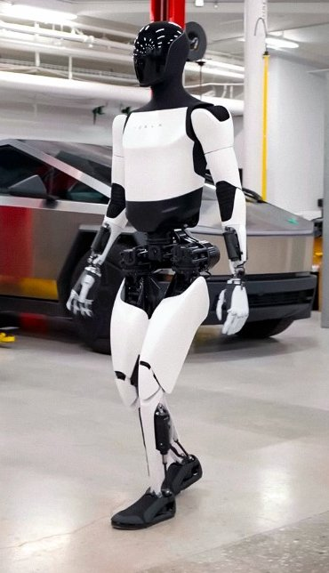
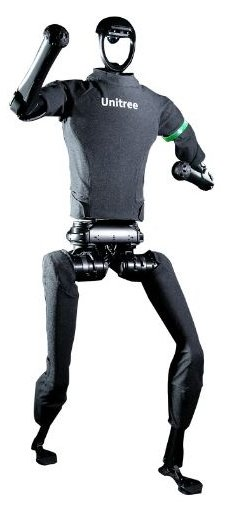
Let’s create general purpose robot!
Robots in our lab
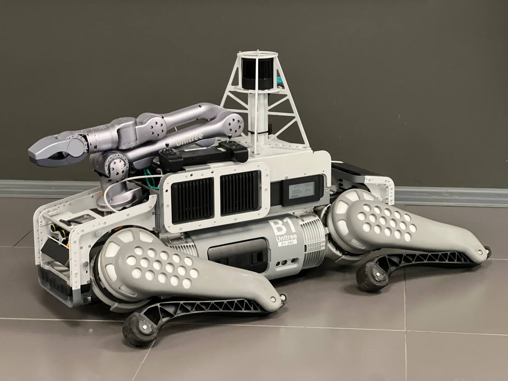
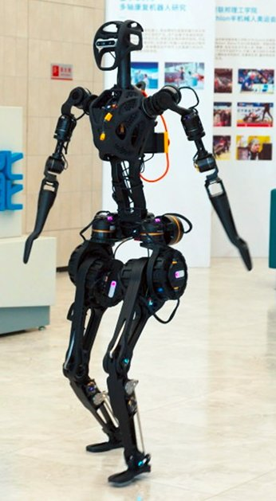
Recent progress


Optimal control vs Reinforcement Learning

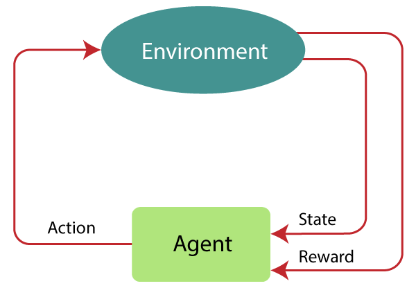
- Online compute vs Online lookup
- Time-indexed vs State-indexed
- Model-based vs Model-free
Dynamic models for legged systems
Rigid Body Dynamics
\[ \mathbf{M}(\mathbf{q}) \ddot{\mathbf{q}}+\mathbf{h}(\mathbf{q}, \dot{\mathbf{q}})=\mathbf{S}^T \boldsymbol{\tau}+\mathbf{J}(\mathbf{q})^T \mathbf{f}, \]
where \(\mathbf{M} \in \mathbb{R}^{(6+n) \times(6+n)}\) is the joint-space inertia matrix, \(\mathbf{h} \in \mathbb{R}^{6+n}\) is the effect of Centrifugal, Coriolis and gravity terms, \(\mathbf{S}^T=\left[\begin{array}{ll}\mathbf{0}_{n \times 6} & \mathbf{I}_{n \times n}\end{array}\right]^T\) is a Selection Matrix which applies the torque \(\boldsymbol{\tau}\) to only the \(n\) joint rows and the Jacobian \(\mathbf{J}\) maps forces \(\mathbf{f}=\left[\mathbf{f}_1^T, \ldots, \mathbf{f}_{n_i}^T\right]^T \in \mathbb{R}^{3 n_i}\) at the \(n_i\) end-effectors to \(6+n\) dimensional generalized forces.
Split into 6 unactuated \((u)\) and \(n\) actuated rows: \[ \begin{aligned} & \mathbf{M}_u(\mathbf{q}) \ddot{\mathbf{q}}+\mathbf{h}_u(\mathbf{q}, \dot{\mathbf{q}})=\mathbf{J}_u(\mathbf{q})^T \mathbf{f} \\ & \mathbf{M}_a(\mathbf{q}) \ddot{\mathbf{q}}+\mathbf{h}_a(\mathbf{q}, \dot{\mathbf{q}})=\boldsymbol{\tau}+\mathbf{J}_a(\mathbf{q})^T \mathbf{f}, \end{aligned} \]
A torque \(\boldsymbol{\tau}\) cannot directly influence the base motion of the robot!
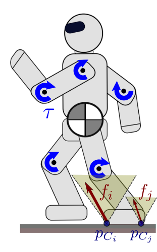
Dynamic models for legged systems
Centroidal Dynamics
By expressing the change of momentum in a frame anchored at the current Center of Mass \((\mathrm{CoM})\) \(\mathbf{r}\), also called centroid, we can rewrite the dynamics expressed in RBD model as \[ \mathbf{A}(\mathbf{q}) \ddot{\mathbf{q}}+\dot{\mathbf{A}}(\mathbf{q}) \dot{\mathbf{q}}=\left[\begin{array}{l} m \mathbf{g}+\sum_{i=1}^{n_i} \mathbf{f}_i \\ \sum_{i=1}^{n_i} \mathbf{f}_i \times\left(\mathbf{r}(\mathbf{q})-\mathbf{p}_i(\mathbf{q})\right) \end{array}\right] \]
Centroidal Momentum Matrix \(\mathbf{A} ∈ R^{6×(6+n)}\) maps the velocities, and therefore momentum, of each individual body into a common reference frame, expressed at the CoM.
Dynamic models for legged systems
Single Rigid Body Dynamics
- Momentum produced by the joint velocities is negligible
- Full-body inertia remains similar to the one in nominal joint position
\[ \begin{aligned} m \mathbf{\ddot{r}}&=m\mathbf{g} + \sum{\mathbf{f}_i} \\ \frac{d}{dt}(\mathbf{I\omega})&= \sum{\mathbf{f}_i \times (\mathbf{r}-\mathbf{p}_i)} \end{aligned} \]
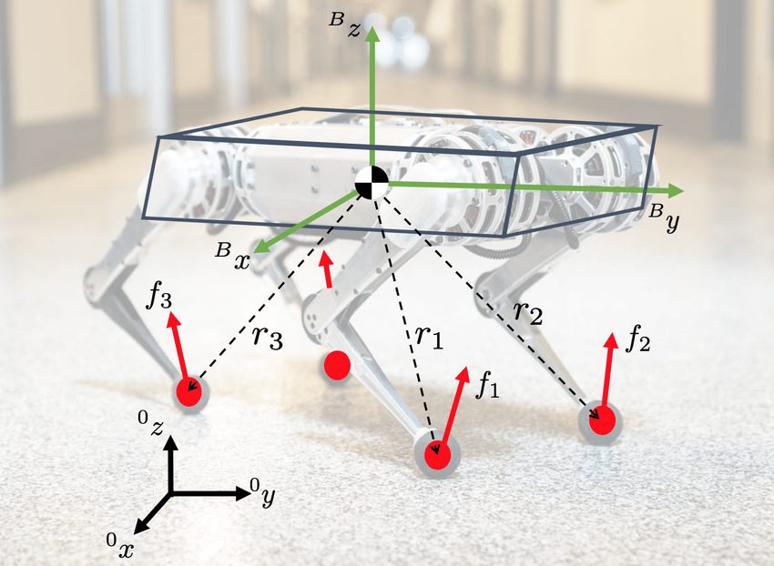
Dynamic models for legged systems
Linear Inverted Pendulum Model
- CoM height \(\mathbf{r_z}\) is constant
- Angular velocity \(\mathbf{\omega}\) and acceleration \(\mathbf{\dot{\omega}}\) of the base are zero
- Footholds are at constant height
\[ m \ddot{r}_x = \frac{mg}{h}(r_x-p_{c,x}) \]
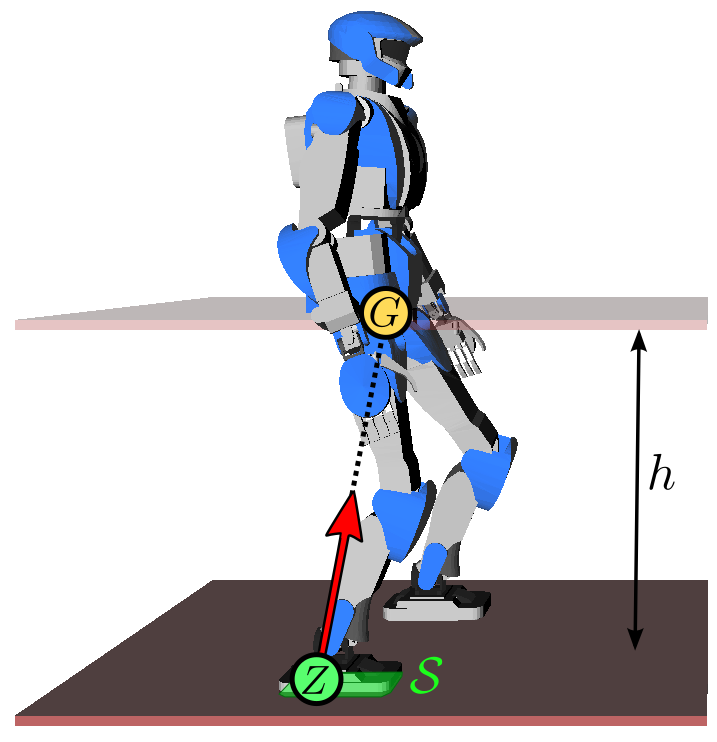
Tree of dynamic models
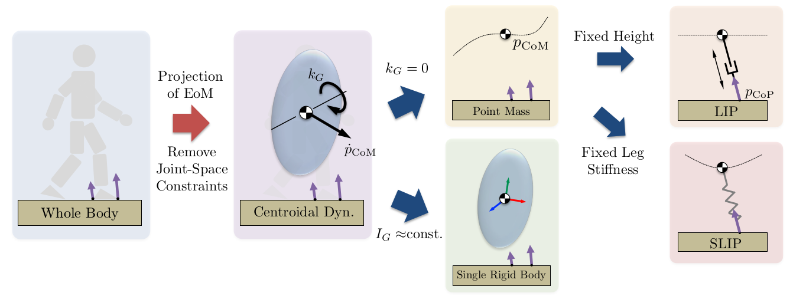Contact models
Contacts can be modeled as either rigid or visco-elastic:
- Visco-elastic models ensure continuous dynamics but lead to stiff differential equations with corresponding numerical challenges for simulation and optimization
- In rigid contact model the dynamics becomes hybrid because when two points make contact, their relative velocity must immediately become zero to avoid penetration
\[ \renewcommand{\vec}[1]{\mathbf{#1}} \begin{aligned} \vec{M}(\vec{q}^-)(\vec{\dot{q}^+} - \vec{\dot{q}^-}) &= \vec{J}^T_c(\vec{q}^-) \vec{F} \\ \vec{J}_c(\vec{q}^-)\vec{\dot{q}^+} &= \vec{0} \end{aligned} \]
results in discrete transition map \[ \vec{x}^+ = \Delta (\vec{x}^-) \]
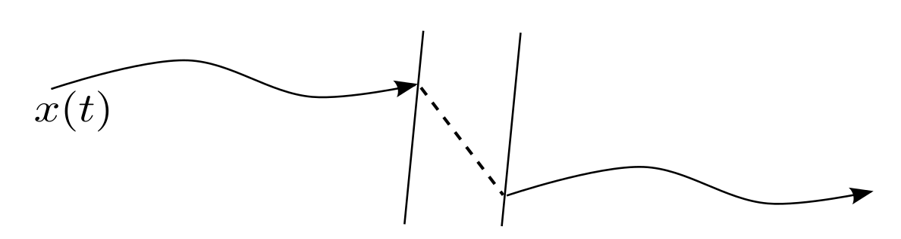
Optimal Control Problem
Problem formulation
Model-based optimization for the real-time generation and control of movement.
\[ \begin{aligned} & \underset{x, u, f}{\text{minimize}} & & cost(x(t), f(t), u(t)) \\ & \text{subject to} & & M(q) \ddot{q}+h(q, \dot{q})=S^T \tau+J(q)^T f\\ & & & ContactConstraints(x(t), f(t), u(t), Env) \\ & & & KinematicsConstraints(x(t)) \\ & & & InputConstraints(u(t), x(t)) \\ & & & TaskConstraints(x(t), u(t), f(t)), \quad \forall t. \end{aligned} \]
Optimal Control Problem
Contact Constraints
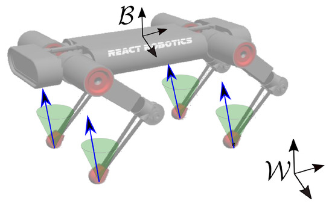
\[ FC = \{ f| f_z \geq 0, \sqrt{f_x^2+f_y^2} \leq \mu f_z \} \]
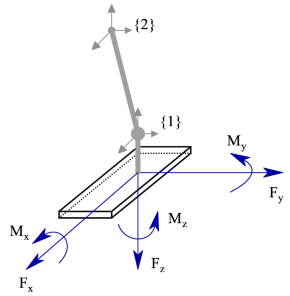
\[ \begin{aligned} |f_x| \leq \mu f_z, \quad |f_y| \leq \mu f_z, \quad f_z \geq 0 \\ |\tau _x| \leq Y f_z, \quad |\tau _y| \leq X f_z, \quad \tau_{min} \leq \tau_z \leq \tau_{max} \end{aligned} \]
Optimal Control Problem
Kinematics Constraints
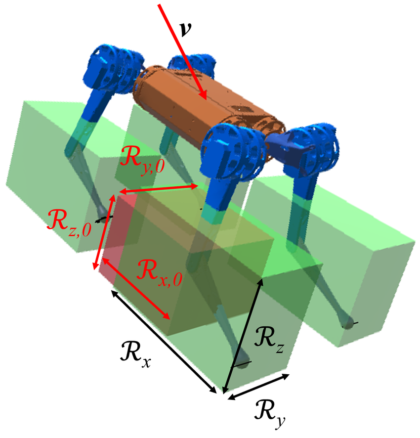
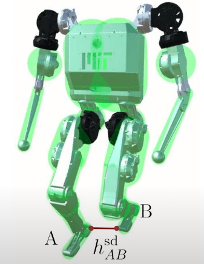
Legged robot dynamic locomotion
Hierarchical control

Legged robot dynamic locomotion
MPC as a local planner
- Leg contact schedule is known
- Foothold positions are known
- Robot trajectory lies close to the reference one
\[ \begin{aligned} \frac{\mathrm{d}}{\mathrm{d} t}\left[\begin{array}{c} {\mathbf{\Theta}} \\ {\mathbf{p}} \\ {\boldsymbol{\omega}} \\ {\mathbf{\dot{p}}} \end{array}\right] & =\left[\begin{array}{cccc} \mathbf{0}_{3} & \mathbf{0}_{3} & \mathbf{R}_{z}(\psi) & \mathbf{0}_{3} \\ \mathbf{0}_{3} & \mathbf{0}_{3} & \mathbf{0}_{3} & \mathbf{1}_{3} \\ \mathbf{0}_{3} & \mathbf{0}_{3} & \mathbf{0}_{3} & \mathbf{0}_{3} \\ \mathbf{0}_{3} & \mathbf{0}_{3} & \mathbf{0}_{3} & \mathbf{0}_{3} \end{array}\right]\left[\begin{array}{c} {\mathbf{\Theta}} \\ {\mathbf{p}} \\ {\boldsymbol{\omega}} \\ {\mathbf{\dot{p}}} \end{array}\right]+ {\left[\begin{array}{cccc} \mathbf{0}_{3} & \ldots & \mathbf{0}_{3} \\ \mathbf{0}_{3} & \ldots & \mathbf{0}_{3} \\ \hat{\mathbf{I}}^{-1}\left[\mathbf{r}_{1}\right]_{\times} & \ldots & \hat{\mathbf{I}}^{-1}\left[\mathbf{r}_{n}\right]_{\times} \\ \mathbf{1}_{3} / m & \cdots & \mathbf{1}_{3} / m \end{array}\right]\left[\begin{array}{c} \mathbf{f}_{1} \\ \vdots \\ \mathbf{f}_{n} \end{array}\right]+\left[\begin{array}{c} 0 \\ 0 \\ 0 \\ \mathbf{g} \end{array}\right] } \end{aligned} \]
Get Linear Time Varying system with linear constraints on forces (friction cone) and use Quadratic Programming.
Legged robot dynamic locomotion
Whole body control
Find desired torques \(\vec{\tau}\) based on desired Ground Reaction Forces \(\vec{f_d}\) and desired positions.
\[ \begin{aligned} \min _{\ddot{\boldsymbol{q}}, \boldsymbol{\tau}, \boldsymbol{f}} & \left\|\boldsymbol{J}_t \ddot{\boldsymbol{q}}+\dot{\boldsymbol{J}}_t \dot{\boldsymbol{q}}-\dot{\boldsymbol{v}}_t\right\|_{Q_t}^2+\left\|\boldsymbol{e}_u\right\|_{R_u}^2+\|\boldsymbol{\tau}\|_{R_\tau}^2 \\ \text { s.t. } & \boldsymbol{M} \ddot{\boldsymbol{q}}+\boldsymbol{c}=\boldsymbol{S}_a^{\top} \boldsymbol{\tau}+\boldsymbol{J}_c^{\top} \boldsymbol{f} \\ & \boldsymbol{J}_c \ddot{\boldsymbol{q}}+\dot{\boldsymbol{J}}_c \dot{\boldsymbol{q}}=\mathbf{0} \\ & \text { friction cone constraint: } \boldsymbol{u} \in \mathbb{U}, \\ & |\boldsymbol{\tau}| \leq \boldsymbol{\tau}_{\max },|\ddot{\boldsymbol{q}}| \leq \ddot{\boldsymbol{q}}_{\text {max }}, \end{aligned} \]
where \(\boldsymbol{J}_t\) is the task Jacobian matrix, \(\boldsymbol{\dot{v}}_t\) is the commanded task dynamics; \(\boldsymbol{e}_f = \boldsymbol{f}_d - \boldsymbol{f}\) is the deviation from the desired GRW.
Desired task positions of foot and torso are derived used PD scheme in task space:
\[ \boldsymbol{\dot{v}}_t = \boldsymbol{\ddot{p}}^d + \boldsymbol{K}_P(\boldsymbol{p}^d - \boldsymbol{p}) + \boldsymbol{K}_D(\boldsymbol{\dot{p}}^d-\boldsymbol{\dot{p}}) \]
Legged robot dynamic locomotion
Elevation map and Foothold adaptation
Batch-search around the nominal foothold in elevation map with the following scoring and constraints:
- Min surface quality measure (slopes, roughness, edges)
- Min distance to edge (edge distance field)
- Max step height
- Kinematic reachability
- Max swing velocity during continuous update
- Scoring: surface quality + stability criteria + distance to nominal foothold.
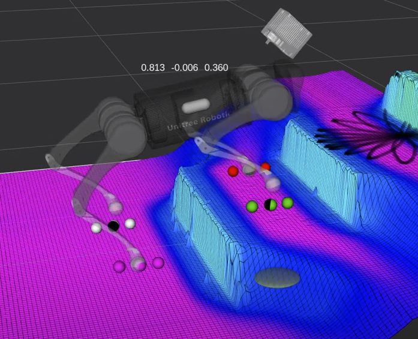
Legged robot dynamic locomotion
Gait Scheduler
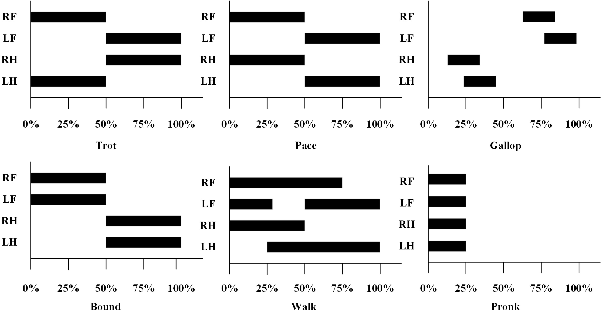
Time scale factor K: \[ \begin{gathered} \dot{K}=C_k(1-K)+C_{\ddot{p}_c}\left\|\ddot{p}_c\right\|^2-C_{k_G}\left\|\boldsymbol{k}_G\right\|^2 \\ \dot{K}_{l b} \leq \dot{K} \leq \dot{K}_{u b}, K_{l b} \leq K \leq K_{u b} \end{gathered} \]
Quadruped robot dynamic locomotion
Biped robot dynamic locomotion
Same approach is applicable to bipeds and widely used in hardware
Biped Trajectory Optimization
For biped getting the dynamically feasible human-like walking become challenging, however some of the robots already can do even more…
Biped Trajectory Optimization
Methematical Formulation
The general pipline is to formulate infinite optimization problem in continues time and transcript to finite discrete space:
\[\begin{equation} \begin{aligned} \min _{\mathbf{x}(t), \mathbf{u}(t)} & \ell_f\left(\mathbf{x}\left(t_f\right)\right)+\int_{t_0}^{t_f} \ell(\mathbf{x}(t), \mathbf{u}(t)) d t \\ \text { subject to } & \dot{\mathbf{x}}(t)=f(\mathbf{x}(t), \mathbf{u}(t)), \quad \forall t \in\left[t_0, t_f\right] \\ & \mathbf{x}\left(t_0\right)=\mathbf{x}_0 \end{aligned} \end{equation}\]
\[\begin{equation} \begin{aligned} \min _{\mathbf{x}_k, \mathbf{u}_k} & \ell_f\left(\mathbf{x}_N\right)+\sum_{k_0}^{N-1} \ell\left(\mathbf{x}_k, \mathbf{u}_k\right) \\ \text { subject to } & \mathbf{x}_{k+1}=\mathbf{f}_d\left(\mathbf{x}_k, \mathbf{u}_k\right), \quad \forall k \in[0, N-1] \\ & \mathbf{x}_0=\mathbf{x}(0) \\ & + \text { other constraints } \end{aligned} \end{equation}\]
- Where to get dynamics? (preferably given by urdf)
- How to transmit from continues OCP to numerical optimization with finite amount of variables? (transcription)
- How to solve this problem and get the derivatives for gradient/Newton methods? (solver and AD)
Biped Trajectory Optimization
Components of Trajectory Optimization
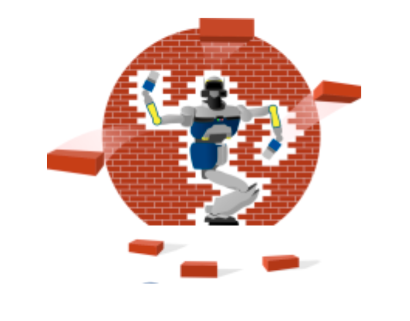
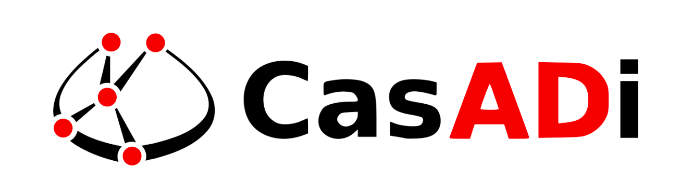
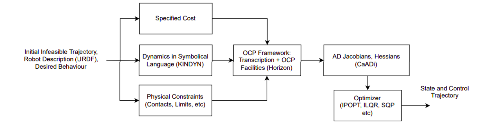
Biped Trajectory Optimization
Application of this “framework” yields sequance of optimal states and control to be applied to the robot
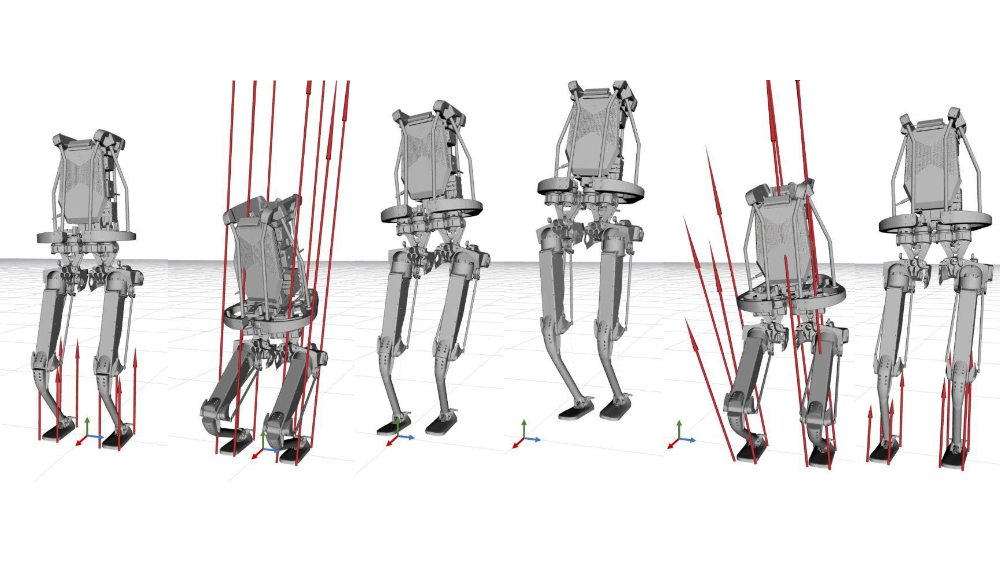Biped Trajectory Optimization
Initial Guess for the Solver
Nonconvex optimization is prone to local minima and infeasibility and usually require good initial guess, there are plenty of options here, one is to simply use mocap and mimic human motion

Biped Trajectory Optimization
MotionGPT as Initial Guess
Nowadays another source of “human like” motion is coming from learning, so we use it instead of MOCAP!
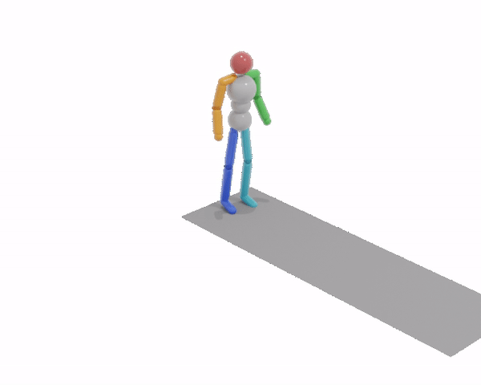
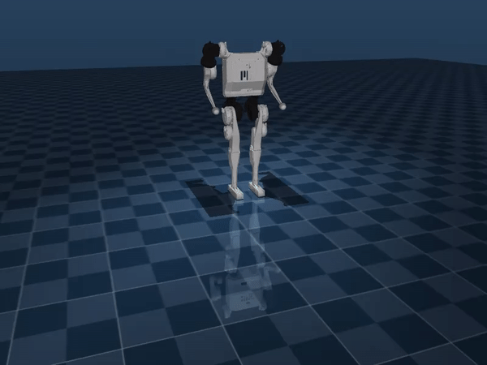
Biped Trajectory Optimization
Energy effective periodic motions
Reinforcement Learning
Learning to Walk in Minutes Using Massively Parallel Deep RL
Reinforcement Learning
General ideas
- PPO is mainly used as learning algorithm
- The learning strategies can be split into two categories: Learning w/w-o References
- Bipedal robots are much more vulnerable to unreliable dynamics
- All methods use joint positions as actions
Reinforcement Learning
Reward design
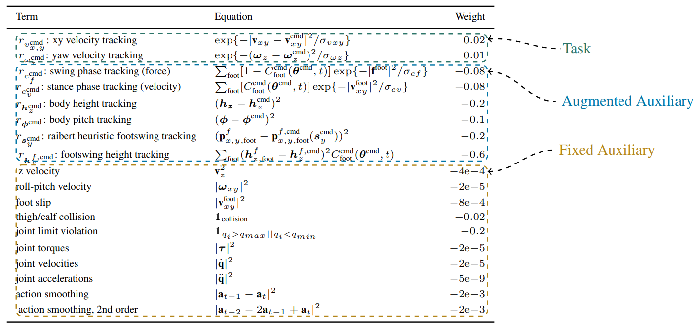Typical rewards from https://gmargo11.github.io/walk-these-ways/